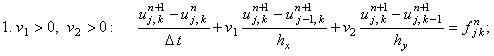
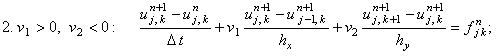
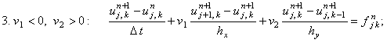
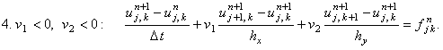

|
2.1. Характеристика.
Применение правила выбора конечной разности для аппроксимации первой
производной по координате к двумерным дифференциальным уравнениям в частных производных первого порядка
позволяет записать для уравнения (8.1), учитывая различные варианты знаков v1 и v2, четыре неявные
разностные схемы, которые с учётом обозначений, введённых при описании разностной сетки для
двумерных задач, имеют вид:
| |
 |
(8.8) |
| |
 |
(8.9) |
| |
 |
(8.10) |
| |
 |
(8.11) |
Учитывая порядок аппроксимации разностных операторов,
из которых составлены разностные схемы (8.8)-(8.11), легко видеть, что каждая из них
имеет первый порядок аппроксимации и по времени, и по каждой из координат:
Для решения разностных схем (8.8)-(8.11) требуется правильно задать начальное и граничные условия:
|